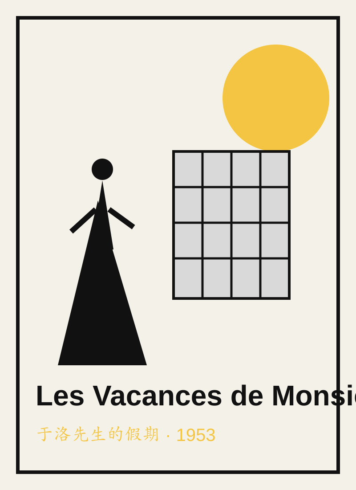
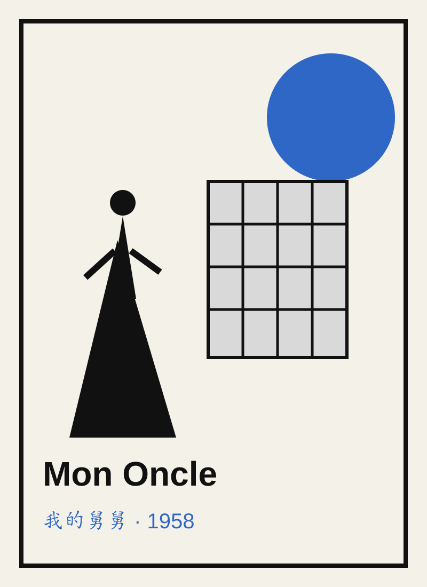
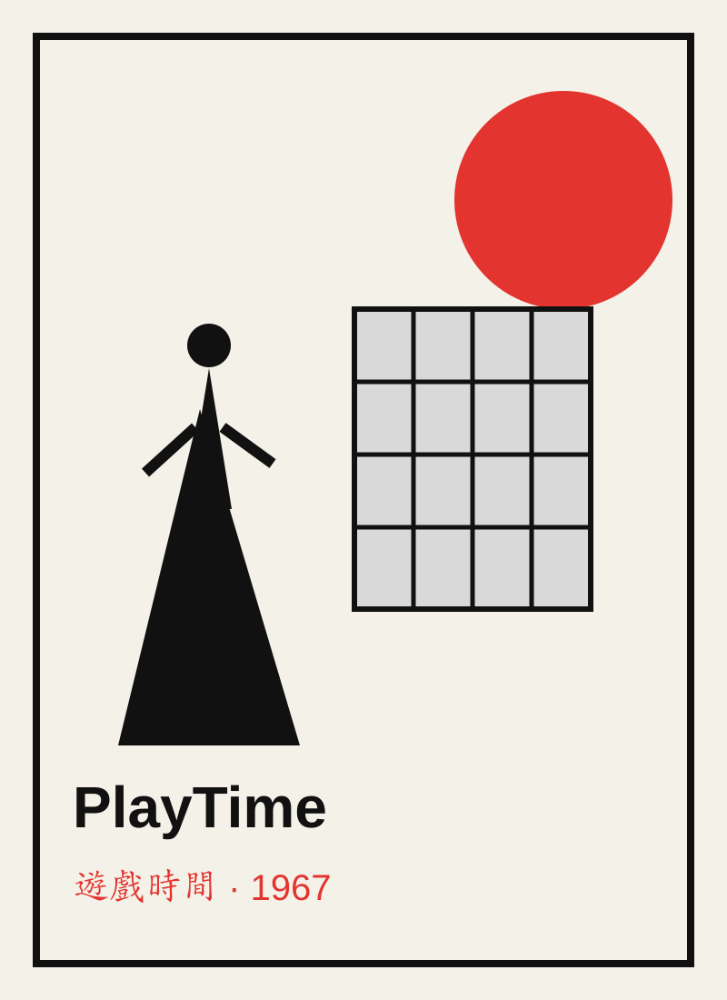
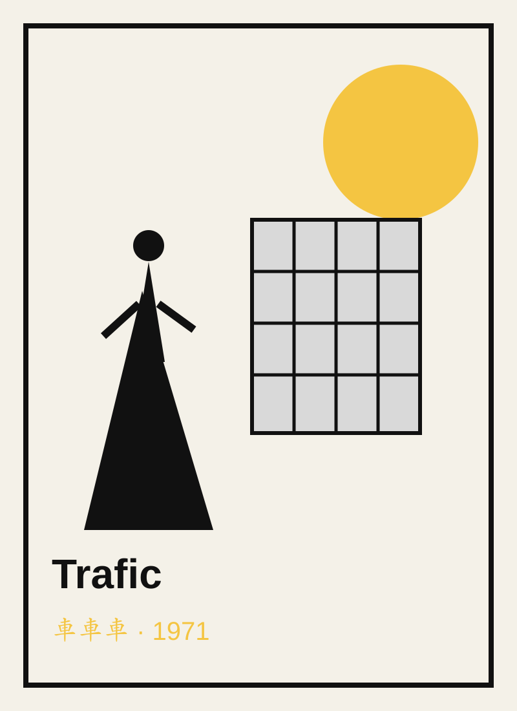
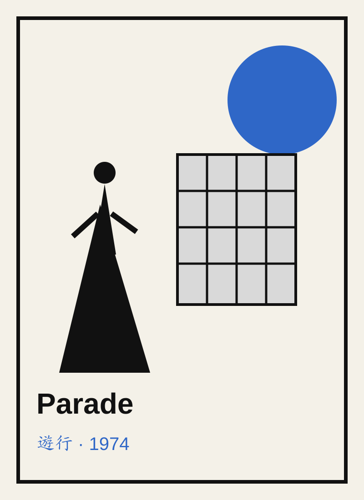

節日
鄉村郵差在節慶中模仿美式高效率送信，越忙越混亂。
六部長片構成一條清楚的創作路徑：從鄉村、海濱與住宅，走向玻璃都市、汽車公路與馬戲舞台。
鄉村郵差在節慶中模仿美式高效率送信，越忙越混亂。

于洛先生來到海濱度假，笨拙舉止悄悄擾亂旅館的秩序。

于洛在傳統街區與高度機械化住宅之間遊走，揭露現代生活的荒謬。

一群人物在玻璃、鋼構與標準化城市中迷路，都市逐漸變成大型舞台。

于洛護送一輛充滿奇特設計的露營車前往車展，沿途事故不斷。

馬戲、觀眾與表演者的界線逐漸消失，回到純粹的身體喜劇。